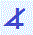

|
|
|
י YodGematria 10Numerology 10 > 1 |

means of attainment; wrist and cupped fingers; giving, receiving, sharing
to obtain, acquire, accumulate, amass; to count, number, approximate
to catch, grab, pick, take; to touch, feel; to reach, fondle; to beckon, invite; to bring
blessings
ability; stamina, duration; satisfaction; expedience
possession, ownership; acquisitions, fortune, wealth; benefactor
the adjectives my, mine, my own
to incite
to entice, tempt, excite; to offer, invite, inspire; to motivate, shove, rush, hurry
to instill, insinuate; to nudge, stimulate, kindle, enable, implement; appreciation, applause
actions
activity; to act, perform, do, achieve; to arrive, depart
to engage, experience; to tease, titillate; to irritate, debilitate
to provide, supply, furnish; to apply, exert, exercise
to present, introduce; to demonstrate, expose, identify, betray
assertion, imposition; to pay, repay, restore; to redress, adjust
to kneel, pay homage; to honor, respect, salute, serve
obeisance, submission; to be humbled; to succumb, suffer
responsibility; necessity; to require, need, want
to plant; to enact, execute, utilize; behavior, intent
to appropriate
to retain, profit, benefit; to hold, clasp; to confiscate, hoard; usury
to steal, rob, take, deplenish, reduce, eliminate, empty; thief, robber
to release
to impart; to allow, give up, let go, part with; to avert, avoid, brush aside
liberation; to drop, forsake; to dismiss, abandon, discard; to betray
to write
to inscribe; inscription; to note, record; integration
to design, engineer; author, source; scribe
|
|
|
|
|
|
|
|
|
|
|
 | |
|
|
|
|
|
|
|
|
|
|
|
||